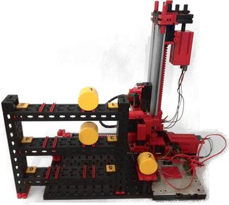
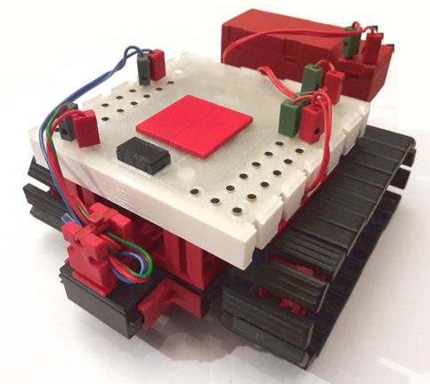
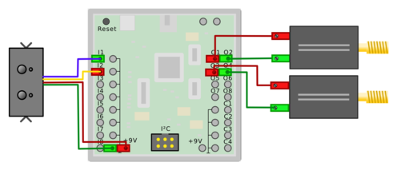
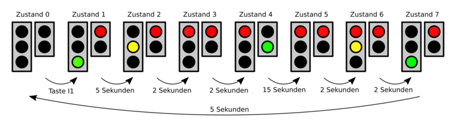

Abbildung 7.2: Serielle Kommunikation mit dem Hochregal
| 1. Controller | - | 2. Installation | - | 3. Erste Schritte | - | 4. Programmierung | - | 5. Schule | - | 6. Experimente | - | 7. Community | - | 8. Bibliotheken | - | 9. Aufbau | - | Anhang |
Während in den Experimenten aus Kapitel 6 der ftDuino-Controller im Mittelpunkt stand und nur wenige externe Komponenten Verwendung fanden geht es in diesem Kapitel um komplexere Modelle. Der ftDuino spielt dabei eine untergeordnete Rolle.
Sämtliche Modelle stammen aus aktuellen Baukästen bzw. sind nah an deren Modelle angelehnt, so dass ein Nachbau mit dem entsprechenden Kasten möglich ist.
Das Modell Hochregallager stammt aus dem Baukasten ``Automation Robots''. In der Originalanleitung wird der Einsatz des TX-Controllers beschrieben. Ein Zusatzblatt beschreibt den TXT-Controller.

Abbildung 7.1: Hochregal mit ftDuino
Der Beispielsketch Datei ► Beispiele ► Ftduino ► HighLevelRack steuert das Modell ``Hochregallager'' aus dem Baukasten 511933 ``ROBO TX Automation Robots''. Der Anschluss des ftDuino an das Modell entspricht dabei exakt dem Schaltplan für den TXT.
Die Bedienung erfolgt dabei aus dem seriellen Monitor vom PC aus1 .
Wichtig: Damit die Befehlseingabe klappt müssen im seriellen Monitor die Zeilenden auf Neue Zeile oder Zeilenumbruch (CR) eingestellt worden sein, wie im Abschnitt 3.4.1 beschrieben.
Abbildung 7.2: Serielle Kommunikation mit dem Hochregal
Die Eingänge des ftDuino sind auch im Schalter-Modus mit den fischertechnik-Fototransistoren kompatibel. Ein beleuchteter Transistor liefert dann den Wahrheitswert ``wahr'', ein unbeleuchter den Wert ``unwahr''.

Abbildung 7.3: Flipper auf ftDuino-Basis
Der Beispiel-Sketch des Flippers aus dem ElectroPneumatic-Set findet sich unter Datei ► Beispiele ► Ftduino ► Pinball. Er nutzt die Fototransistoren als Schaltereingänge für die Lichtschranken. Eine durch eine Kugel unterbrochene Lichtschranke liefert dann den Wert ``unwahr'':
if(!ftduino.input_get(Ftduino::I4)) {
if(millis() - loose_timer > 1000) {
// ...
}
loose_timer = millis();
}
Dabei wird ein Timer mitgeführt, der z.B. in diesem Fall dafür sorgt,
dass frühestens eine Sekunde (1000 Millisekunden) nach einem Ereignis
ein weiteres Ereignis erkannt wird.
Dieser Sketch nutzt ein OLED-Display, um verbliebene Spielbälle und den Punktestand anzuzeigen2 . Da am ftDuino noch Ausgänge frei sind können stattdessen auch Lampen oder Leuchtdioden verwendet werden.
Der mobile Linienfolger ist an die Modelle des ``ROBOTICS TXT Explorer''-Sets angelehnt und nutzt den ``IR Spursensor'' dieses Sets.

Abbildung 7.4: Ein Linienfolger auf ftDuino-Basis
Ein passender Beispiel Sketch ist unter Datei ► Beispiele ► Ftduino ► LineSensor zu finden. Dieser Sketch wertet kontinuierlich den Liniensensor aus, um eine schwarzen Linie zu folgen3 .
Der Liniensensor wird mit seinen gelben und blauen Kabeln an zwei beliebige der Eingänge I1 bis I8 angeschlossen. Zusätzlich erfolgt über die roten und grünen Kabel die Spannungsversorgung durch den ftDuino.

Abbildung 7.5: Verdrahtungsschema des Linienfolgers
In diesem Fall ist der Spursensor an die Eingänge I1 und I2 angeschlossen. Der Sensor liefert nahezu maximale Spannung (circa 9 Volt) wenn eine weiße Fläche erkannt wird und nur wenig Millivolt, wenn die schwarze Linie erkannt wurde.
// beiden Eingänge auf Spannungsmessung einstellen
ftduino.input_set_mode(Ftduino::I1, Ftduino::VOLTAGE);
ftduino.input_set_mode(Ftduino::I2, Ftduino::VOLTAGE);
// beide Spannungen auslesen
uint16_t linker_wert = ftduino.input_get(Ftduino::I1);
uint16_t rechter_wert = ftduino.input_get(Ftduino::I2);
// eine Spannung kleiner 1 Volt (1000mV) bedeutet 'Linie erkannt'
if((linker_wert < 1000) && (rechter_wert < 1000)) {
// beide Sensoren haben die Linie erkannt
// ...
}
Ein klassisches Modell ist die Ampel bzw. die Fußgängerampel. Das Modell bildet eine Bedarfsampel mit je drei Lampen für die Autos und zwei für Fußgänger ab.
|
|
Ein passender Beispiel-Sketch ist unter Datei ► Beispiele ► FtduinoSimple ► PedestrianLight zu finden. Er implementiert die Ampel in Form eines Zustandsautomaten. Die Lichtfolge entspricht dabei dem üblichen Ablauf in acht Schritten von ``Autos haben grün, Fußgänger rot'' über die Grünphase für die Fußgänger bis schließlich die Autos wieder fahren dürfen.

Abbildung 7.7: Die Zustände der Ampel
Die einfache und naheliegenden Umsetzung der Ampelsteuerung in Software bestünde aus einem Programm, das dem Verlauf der Ampelzustände direkt folgt. Der Programmablauf stoppt, wenn auf den Tastendruck oder auf den Ablauf einer Zeit gewartet wird und setzt fort, wenn das entsprechende Ereignis eingetreten ist. Im Folgenden ist dies exemplarisch für die ersten zwei Zustände der Ampel dargestellt.
void loop() {
// warte auf Tastendruck
while(!ftduino.input_get(BUTTON)) {
};
// Ampel schaltet ein, Autos haben grün, Fußgänger rot
cars_green();
pedestrians_red();
delay(CARS_GREEN_PHASE);
// Autos bekommen gelb
cars_yellow();
delay(YELLOW_PHASE);
// ...
}
Dieses Programm ist kurz und leicht zu verstehen. Das ist eigentlich gut, hat
aber einen entscheidenden Nachteil: Während auf ein Ereignis gewartet wird stoppt
der gesamte Programmablauf und es ist nicht möglich, weitere Dinge parallel
zu erledigen.
Der PedestrianLight-Sketch soll aber beispielsweise nebenbei mit der eingebauten LED des ftDuino blinken. Dies soll unterbrechungsfrei passieren und unabhängig davon sein, in welchem Zustand sich die eigentliche Ampel gerade befindet.
Die Lösung ist ein Zustandsautomat.
// die loop-Funktion wird immer wieder aufgerufen
void loop() {
// Zeitpunkt des nächsten Lichtwechsel-Ereignisses
static unsigned long next_event = 0;
// Aktueller Zustand der Amepl
static char state = 0;
// Die interne Leuchtdiode soll einmal pro Sekunde blinken
static unsigned long flash_timer = 0;
if(millis() > flash_timer + 10)
digitalWrite(LED_BUILTIN, LOW);
if(millis() > flash_timer + 1000) {
digitalWrite(LED_BUILTIN, HIGH);
flash_timer = millis();
}
// Teste ob ein Fussgänger im Zustand 0 (Ampel aus) den
// Knopf gedrückt hat
if((state == 0) && (ftduino.input_get(BUTTON)))
state = 1; // ja -> wechsel in Zustand 1
if(state > 0) {
// Teste, ob die eingestellte Zeit vergangen ist
if(millis() > next_event) {
switch(state) {
// Ampel wechselt in Zustand 1: Autos haben grün, Fussgänger haben rot
case 1: {
// schalte Lampen
cars_green();
pedestrians_red();
// setze Zeitpunkt für nächstes Ereignis
next_event = millis() + CARS_GREEN_PHASE;
// setze Zustand für nächstes Ereignis
state++; // Kurzschreibweise für "state = state + 1"
break;
}
// Ampel wechselt in Zustand 2: Autos haben gelb, Fussgänger haben rot
case 2: {
cars_yellow();
next_event = millis() + YELLOW_PHASE;
state++;
break;
}
// Ampel wechselt in Zustand 3: Autos haben rot, Fussgänger haben rot
case 3: {
// ...
break;
}
// ...
}
}
}
}
Dieses Listing ist deutlich komplizierter. Aber es hat den großen
Vorteil, dass an keiner Stelle aktiv gewartet wird. Stattdessen wird
die Programmausführung ständig fortgesetzt. Um trotzdem die einzelnen
Ampelphasen ablaufen lassen zu können werden zwei Variablen als
Speicher angelegt (next_event und state). Hier wir
permanent vermerkt, in welchem Zustand sich die Ampel befindet und wie
lange dieser Zustand noch erhalten bleiben soll.
Auf diese Weise ist es möglich, die LED völlig unabhängig blinken zu lassen und ggf. auch weitere Steueraufgaben zu erledigen.
Geschuldet ist der große Aufwand der Tatsache, dass der ftDuino über kein eigenes Betriebssystem verfügt, das mehrere Programmteile (sogenannte Prozesse oder Threads) gleichzeitig bedienen könnte, wie es auf PCs und Smartphones z.B. üblich ist.
Der große Vorteil des einfachen ftDuino-Ansatzes liegt in der seiner exakten Vorhersagbarkeit. Jeder kennt es vom PC oder Smartphone, wenn das Betriebssystem im Hintergrund unerwartet ``beschäftigt'' ist und die Programmausführung stockt. Was bei einer Bedienoberfläche nur lästig ist kann bei Steuer- und Regelaufgaben leicht zu einem Problem werden, wenn z.B. ein Motor bei Erreichen einer bestimmten Position nicht schnell genug gestoppt wird. Aus diesem Grund kann der wesentlich einfachere ftDuino auf viele Dinge schneller und vorhersagbarer reagieren als z.B. ein vom Linux-Betriebssystem angetriebener TXT-Controller oder Raspberry-Pi. Ein weiterer positiver Effekt des nicht vorhandenen Betriebssystems ist der schnelle Systemstart. Ein ftDuino ist sofort nach dem Einschalten voll funktionsfähig und man muss keinen Betriebssystemstart abwarten, bevor das Gerät seine Aufgaben erfüllen kann.
Der schnelle Systemstart und das leicht vorhersagbare Verhalten sind die Hauptgründe, warum es auch im kommerziellen Umfeld immer einen Bedarf an solch einfachen Systemen wie dem ftDuino gibt, auch wenn der Einsatz komplexer, betriebssystembasierter Lösungen mit sinkenden Hardware-Preisen auch in immer einfacheren Geräten möglich wird.
| ftDuino manual - modelle | (c) 2017-2019 Till Harbaum |